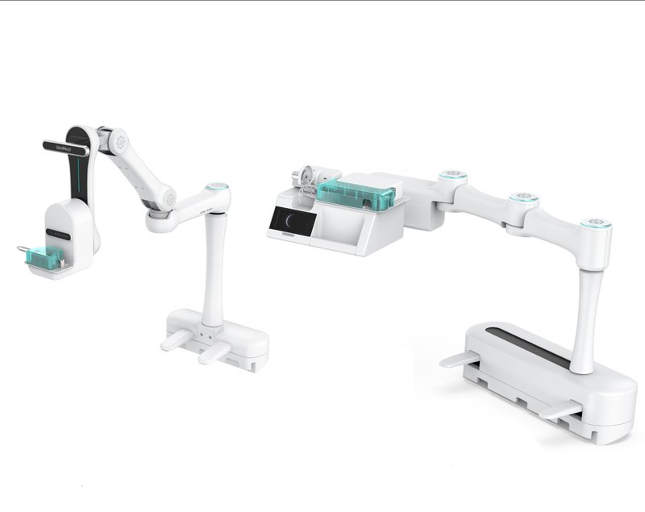

Commercial and clinical-stage systems · etcath200_wemed2021
ETcath200
ETcath / ETcath200

1 / 4


- Family
- Commercial and clinical-stage systems (commercial)
- Devices
- guidewire, RX balloon/stent catheter (guidewire arm); guiding catheter advance (catheter arm)
- Degrees of freedom
- N.R. as a count
- Push
- Friction rollers
- Twist
- Not reported
- Tested up to
- Human
- Sim-to-real
- None found — No simulation-trained controller found for this robot.
Testing
- Highest level
- Human
- What was tested
- RCT 73 robot vs 79 manual (yu2025_robot); 20 complex lesions (yang2026_feasibility)
- Key numbers
- RCT: clinical success 100% both, robot technical success 100%, longer procedure, lower operator dose (yu2025_robot abstract). Complex lesions: 16/20 (80%) technical success, 4 conversions, 61.0+-23.3 min (yang2026_feasibility).
Mechanism
- Push (translation)
- friction-roller (roller interface per yang2026_feasibility)
- Twist (rotation)
- N.R.
- Device range
- N.R.
- Target anatomy
- coronary (elective PCI low-intermediate risk lesions)
Sensing and interface
- Force sensing
- guidewire force sensing; claimed resolution 0.01 N (people.cn press)
- Leader and haptics
- no (visual resistance display; joystick/roller control box)
- Imaging
- two passive arms on table rails, clear of X-ray equipment
- Sterility
- single-use sterile cassette kit
Size
- Footprint (mm)
- N.R.
- Mass (kg)
- N.R.
Simulation
- Simulation model
- none found
- Sim-trained controller
- none found
Versions
- Lineage
- ETcath200
Sources
- Robot-assisted percutaneous coronary intervention: a prospective, multicenter, randomized controlled, non-inferiority clinical trial · Journal of Geriatric Cardiology, 2025 · doi:10.26599/1671-5411.2025.08.008 [yu2025_robot]
- Feasibility and Safety of the ETcath200 Robotic PCI System for Complex Coronary Lesions: A Prospective Single-Center Study · Catheterization and Cardiovascular Interventions, 2026 · doi:10.1002/ccd.70488 [yang2026_feasibility]
Notes
- Notes
- NMPA approval reported March 2025 (people.cn 2025-03-25 citing a Beijing E-Town WeChat post; registration number/date not seen). First robotic PCI at Anzhen Oct 2021 (search). WeMed contributed to NMPA standard YY/T 1994-2025 (web). Possible WeMed neuro product (Weimai) status: under review per yicai 2024.
This record
- Read level
- full — full text on disk (yang2026) + web
- Picture
- https://www.we-med.com/uploadfile/202509/2d2d043639daec2.png (WeMed product page 冠脉介入手术控制系统 ETcath200, https://www.we-med.com/index.php?c=show&id=661; the same file is the listing image https://www.we-med.com/uploadfile/202509/5289d21516dd81b.png) ↗ — licence: press image (company product image); grade A
- Picture changes
- RGBA product render flattened on white; cropped to the drawing with about 4 % margin (0,0)-(1422,1129) of 1422x1182; no erasing; not upscaled
- Found by
- commercial: Search of commercial and clinical-stage systems.
- Data
- JSON · YAML:
records/robots/etcath200_wemed2021.yaml - Correction
- Suggest a correction [repository not created yet]